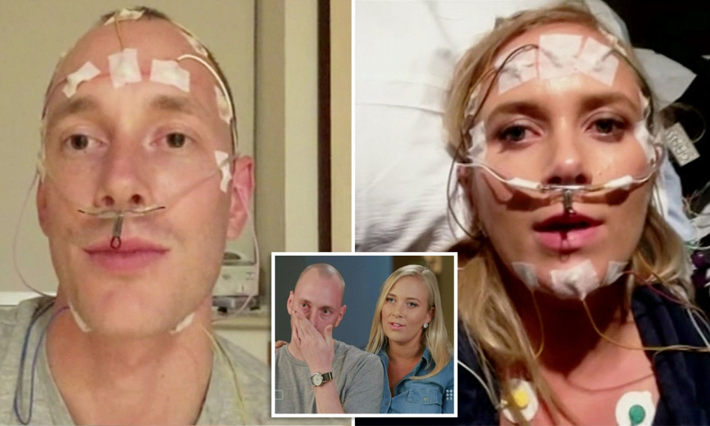
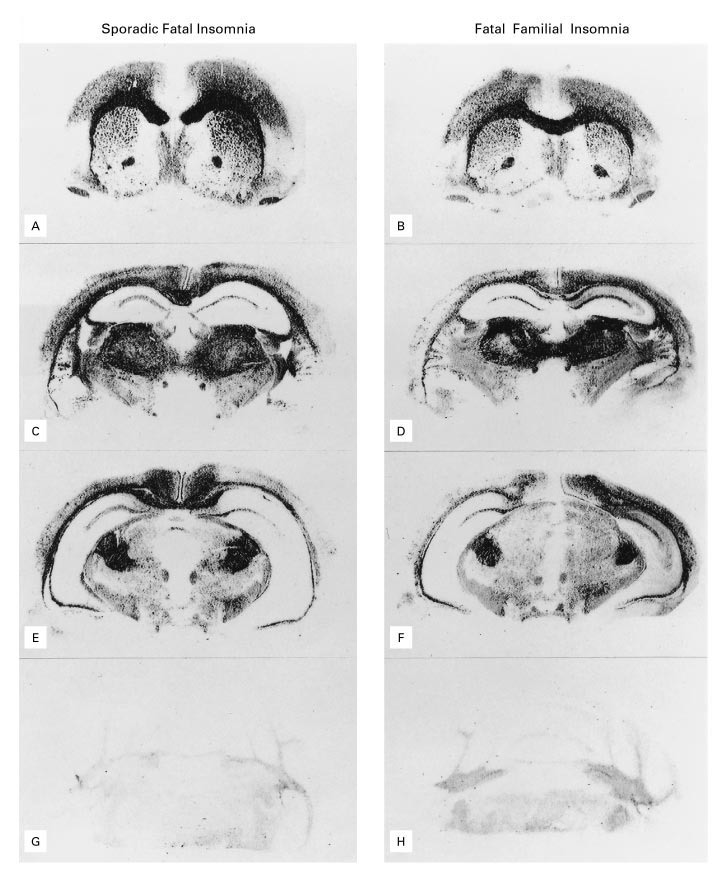
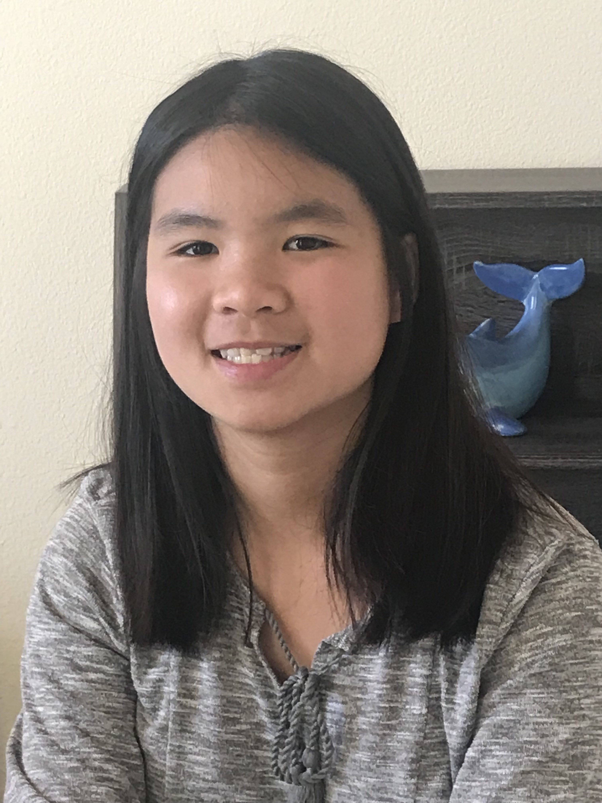

Fatal familial insomnia
Nellie Nguyen. 9/4/2020

Two siblings who have a strong chance of getting Fatal familial insomnia; both their mother and grandmother have died from the disease. (Daily Mail)
Two siblings who have a strong chance of getting Fatal familial insomnia; both their mother and grandmother have died from the disease. (Daily Mail)
For many people, falling into a peaceful sleep after a tiring, long day is a relieving experience. Sleep is essential for physical health, such as helping the body repair and be prepared for the next day. The ability to sleep is expected for humans, and the feeling of tiredness that people have tends to last only for a short amount of time before they can fall asleep. However, for a handful of people, falling asleep is a much more difficult task to do.
Fatal familial insomnia (FFI) is a genetic degenerative brain disorder that affects the thalamus, a brain structure that plays a role in important bodily functions like emotional expression and sleep. According to the National Organization for Rare Disorders, a gene mutation of the PRNP gene is what causes FFI. The PRNP gene is responsible for the making of the prion protein in the brain. The exact function for the gene has not yet been determined, but researchers have proposed some different possibilities, such as assisting with cell-to-cell communication. The main symptom associated with this disorder is insomnia that progressively gets worse over time. The lack of sleep eventually takes a huge toll on a person’s physical and mental health, until it becomes fatal and could lead to a coma or death.
Although the main symptom of FFI is insomnia, victims of this disorder could also experience progressive dementia with cognition, memory, language and behavior issues. Victims also could have difficulty with coordinating voluntary movements and experience odd twitching or muscle spasms. Other symptoms involve the dysfunction of the autonomic nervous system, making symptoms like fever, rapid heart rate and increased sweating more likely. Additionally, anxiety and depression usually affect individuals with FFI. Finally, the disorder usually causes death within a year or two, but this is not always the case for all sufferers.
FFI is extremely rare and only runs in families with a history of it, but in a few instances, there can be a sporadic change in the PRNP gene in individuals without a family history of the disorder. This “spontaneous” mutation is normally called sporadic fatal insomnia or SFI; according to Healthline, it is an even rarer form of this disorder with only 24 documented cases as of 2016. Furthermore, FFI is classified as a prion disorder, and the Genetics Home Reference defines prion diseases as a group of conditions that affect the nervous system. Although the exact amount of people suffering from FFI is unknown, prion disorders collectively affect about one in a million people per year. FFI does seem to affect individuals between the ages of 45 and 50 on average, but there have been cases where FFI affected teenagers and people in their 70s.

Four regions of the brain showing the distribution prions for both FFI and SFI. (New England Journal of Medicine)
Four regions of the brain showing the distribution prions for both FFI and SFI. (New England Journal of Medicine)
There is currently no cure for fatal insomnia, and treatment varies for each person based on their specific symptoms. Treatment plans often involve efforts from a variety of specialists, like neurologists, psychiatrists, psychologists and more. It is quite difficult to create a standardized treatment for victims due to its rarity, but some researchers are working to find effective treatment measures. According to Healthlin, an animal study from 2016 showed that immunotherapy could help, but has not been tested on humans. This animal study is not the only study though; there is an ongoing study on humans that involves the use of the antibiotic doxycycline, which could be effective against the mutation that causes FFI.
Fortunately, a large majority of the population probably will never have to worry about fatal insomnia, so it is not an immediate threat to fret about. However, despite its rarity, it does not take away the fact that fatal insomnia is a terrifying disorder. Along with that, knowing about this disorder can serve as a bittersweet reminder that a rather basic ability, falling asleep, is a fortunate thing to have and appreciate.
Cover Photo: (Live Science)

Nellie Nguyen
Nellie is a rising sophomore at Westminster High School. She is interested in many different STEM related topics, such as biology and computer science. She hopes to be able to explore and share her interests through interSTEM. Outside of STEM, Nellie enjoys playing different instruments, like the piano and violin, and occasionally plays video games with her friends.